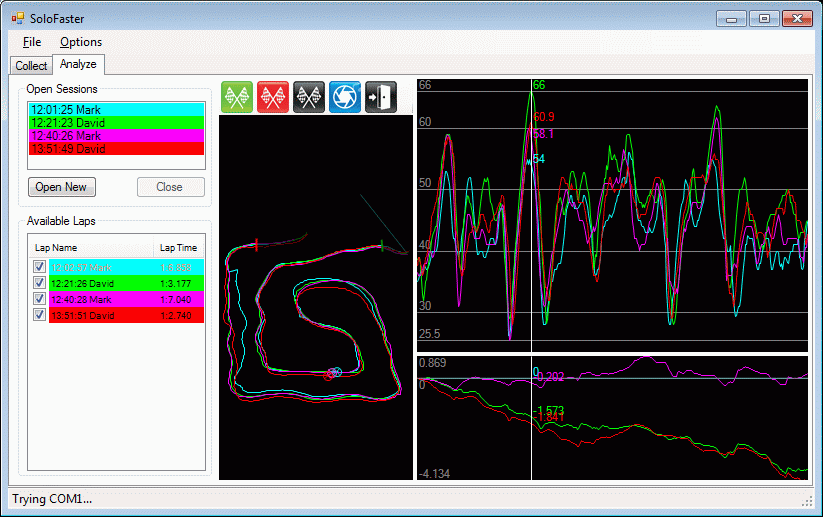

SoloFaster is a project that I (David de Regt) have been working on really passively since the end of the 2011 season. I got tired of MaxQData being too slow to use for autocross and figured I could make something better in a matter of hours, so last year at Solo Nationals, I did. It's intended to be the fastest possible tool for analyzing your runs during an autocross event, with only a single click from pulling the laptop out of the car to analyzing your run.
It's currently somewhat rough, but it's been working really well for me, so I'm opening it up to people to play with. I've also released the source on GitHub (link below). If you make any interesting changes, or want to be a contributor, let me know.

The basic paradigm is simple -- a session is a collection of GPS points. The collect tab allows you to record a session (usually one run, or potentially a whole prosolo session). You pick an event name, driver, and, optionally, notes for the session, and when you're done with the session you open the laptop and click "Save Session and Analyze". This automatically saves the recorded session to the hard drive and opens the session in the Analyze tab. FYI, I usually select Auto-Record and set it to between 15 and 20mph, then try not to drive faster than that to and from the course.
When you're on the Analyze tab, it shows all open sessions on the top left, which you can close (and add saved sessions) at will. There will be a map on the right, and you can click the green and red flags then click and drag on the map to create start and finish lines (or, for road racing, a start/finish combo line) for analysis. Once you set a start and finish line, it automatically splits up your open session(s) into lap(s), which are automatically overlaid for analysis, if multiple laps are found. The X-axis is distance, and it automatically scales all runs to be the full length, so you don't need to worry about aligning times. The Y-axis is velocity in mph.
When you have multiple laps loaded, a bottom chart splits out that has a time-delta strip, showing where you gain/lose time over the selected basis lap (which forms the 0-line.) It automatically sets the first lap as the basis lap, but you can click a different lap in the laps list to designate that as the new basis lap. In the sample above, the blue Mark lap is selected as the basis lap. From there, you can click at any point on either the time strip or the speed strip to bring up a vertical line, which will show the time delta and the speeds for all open laps on both charts.
Download: here.
Source Code: here.
Recent Updates:
- Open sourced!
- Added TraqMate V2 log support
For now, there's no MSI installer, so download the zip and uncompress it to a folder somewhere. I've included some of my collected data to play with. It's a pretty simple C# app, requiring the .NET Framework 3.5 to be installed. The app requires a standard NMEA GPS connected via a COM port (I use an old G-Rays bluetooth GPS that creates a bluetooth COM port) to collect data, but you can play with analyzing the existing data without having a GPS connected. It will auto walk all available COM ports on the system repeatedly until it finds a GPS, at which point it will display the satellite status for the GPS and your current fix information (on the Collect tab.)
It runs on Windows XP and above, and I usually use it on a crappy old 8" SSD-based netbook (Acer Aspire One AOA-110) which I shove in the glovebox between runs. If the interface seems fairly compact, it's because it's designed to be used on a tiny 1024x600 screen.
If you have any suggestions/bugs/complaints/etc. feel free to email me. I'm especially interested to know what other GPS units it works with, as my unit is no longer made/available, so I'll need to upgrade to something else soon. It'd be good to have suggestions for some hardware (both GPS and laptop) up on here for people to use.